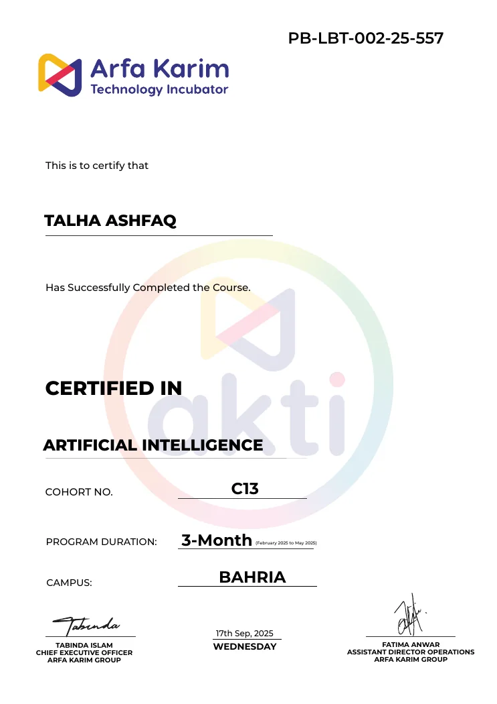

AVAILABLE FOR INTERNSHIPS & COLLABORATION
HELLO, I'M
Learning to code. Building the future.
I'm a Computer Science Student
A Computer Science undergraduate in Lahore exploring software development, Python, and practical AI applications. I turn curiosity into projects and keep improving with every build.
talha / developer.py···
01 / INTRODUCTION
WHO I AM
Curious mind.
Practical thinker.
I'm Talha Ashfaq, a BS Computer Science student at Superior University, Lahore, driven by a passion for building useful technology.
My interest lies in software development, Python, and emerging applications of artificial intelligence. I enjoy working through real problems and learning how the pieces of a system come together.
I'm still growing as a developer. Rather than claiming expertise I haven't earned, I focus on fundamentals, practical projects, and consistent progress.
02 / EDUCATION
LEARNING THE FOUNDATIONS
The journey so far.
A clear look at my academic background and progress.
CURRENT DEGREE IN PROGRESS
SU.
Bachelor of Science
in Computer Science
Superior University · Lahore, Pakistan
PROGRAMBS Computer Science
DURATION2025 — 2029
CURRENT STATUS3rd semester / 8
Completed semesters2 of 8
0102030405060708
Semester 3 is in progress; the progress display counts completed semesters only.
ACADEMIC PERFORMANCE
3.58
CGPAOverall cumulative GPA
SUPERIOR UNIVERSITY● STUDENT-REPORTED CGPA
2025 — 2029
BS Computer Science
Superior University, Lahore
Currently enrolled · 3rd semester2025
Intermediate (ICS)
Punjab College
Completed2023
Matriculation
The Citizens Foundation School
Completed03 / SKILLS
TOOLS & STRENGTHS
My growing toolkit.
Building technical ability and professional skills, one project at a time.
Programming
Core languages and the problem-solving foundation behind my projects.
PythonC++JavaScript basicsHTML & CSS
01 / CODE
AI & Development
Exploring practical applications of AI and backend-oriented development.
AI fundamentalsAutomation conceptsFastAPI basicsAPIs & JSON · learning
02 / BUILD
Professional Skills
Skills developed through collaborative work and customer-facing roles.
CommunicationProblem solvingTeamworkMS OfficeFacebook marketing
03 / CONNECT
04 / PROJECTS
SELECTED PROJECTS
Ideas made real.
Hands-on experiments and functional prototypes. Each project is a step forward.
nova.ai / demo✳
✳
YOUR PERSONAL DEMO ASSISTANTWhat can I help youexplore today?
Learn PythonExplore AIProject ideas
Ask something about programming... ↗
01 / WEB PROTOTYPEINTERACTIVE DEMO
Nova AI — Virtual Assistant
An interactive chat experience with suggested prompts, simulated typing, predefined responses, and conversation history stored locally in the browser.
Prompt suggestionsChat historyTyping feedback
HTMLCSSJavaScriptLocalStorage
Note: This prototype is rule-based; no live AI model is connected.
View live demo ↗A.▦◉▤
ATTENDX / OVERVIEW● ACTIVE
Dashboard overview
STUDENTS24
PRESENT20
ABSENT04
02 / MANAGEMENT SYSTEMBROWSER DEMO
AttendX — Attendance Manager
A browser-based attendance dashboard for student records, daily attendance status, searchable lists, and downloadable CSV reports.
Student recordsDaily attendanceCSV exports
HTMLCSSJavaScriptLocalStorage
Note: Browser-based prototype; no hosted database or multi-user authentication.
View live demo ↗◈ CAREERLENSRESUME INTELLIGENCE
78%
SKILL MATCH8 FOUND
KEYWORDS3 MISSING
Example visualization · not a measured result
03 / PYTHON APPLICATIONLOCAL BACKEND
CareerLens — Resume Analyzer
A keyword-based resume review tool concept for comparing PDF text with job descriptions and identifying matching or missing skills.
PDF text extractionSkill matchingText report
PythonFastAPIPyPDFJavaScript
Note: This is a local-backend prototype, not an official ATS score or an AI assessment. It requires setup.
View project & setup ↗Always building, always learning. More projects are on the way.
Explore my GitHub05 / EXPERIENCE
PROFESSIONAL JOURNEY
Experience that shapes me.
Practical communication, customer service, and problem-solving experience.
01
CUSTOMER SUPPORT
Customer Support Representative
World Communication
1 year · Current role
Handled customer questions, troubleshooting, and timely support while maintaining high professional communication standards.
02
INTERNATIONAL CAMPAIGNS
Call Center Representative
XplodeInn
6 months · Previous role
Worked on USA-focused international campaigns, managing client conversations and developing active listening and cross-cultural communication.
03
RETAIL OPERATIONS
Cashier
Gillani Sweets & Bakers
1 year · Previous role
Managed daily cash and point-of-sale transactions with attention to accuracy and delivered direct customer service.
06 / CERTIFICATION
FORMAL LEARNING
Learning beyond lectures.

VIEW FULL CERTIFICATE ↗✳ COMPLETION CERTIFICATE
Artificial Intelligence
Completed a 3-month Artificial Intelligence course at Arfa Karim Technology Incubator (AKTI), Bahria Campus.
View certificate ↗07 / CONTACT
HAVE SOMETHING IN MIND?
Let's build
something good.
Open to internships, opportunities to learn, collaborations, and interesting ideas. I'd be glad to hear from you.
talha.ashfaq.2007@gmail.com ↗